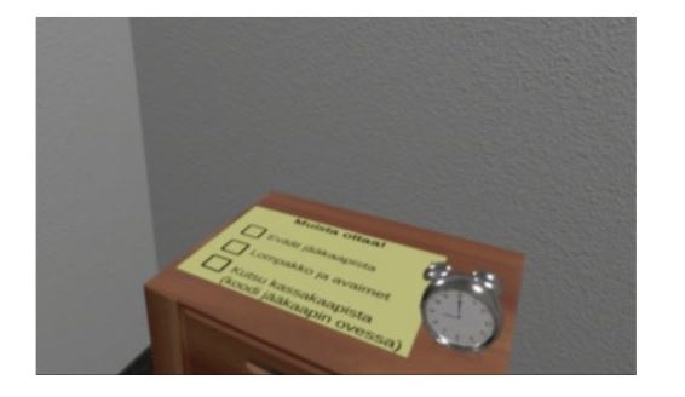
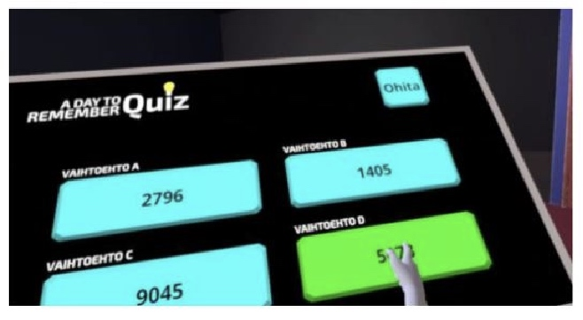
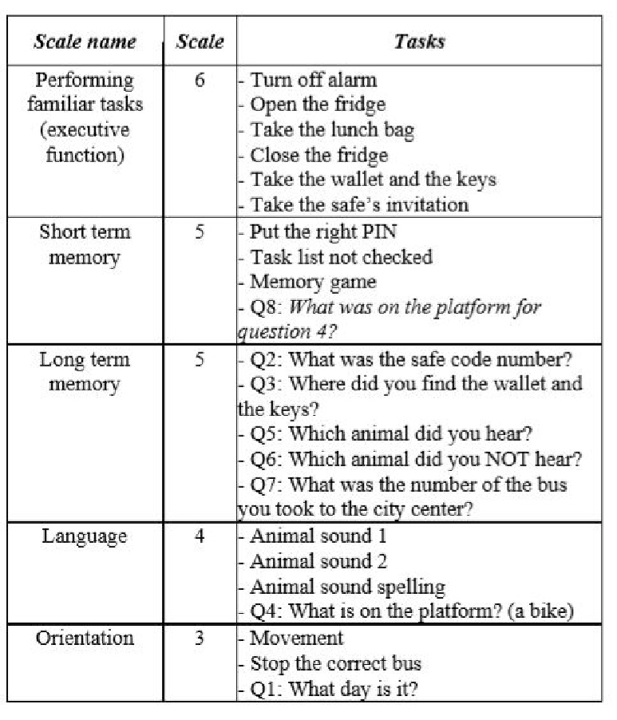
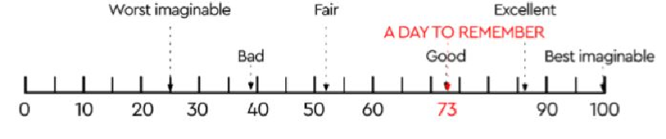
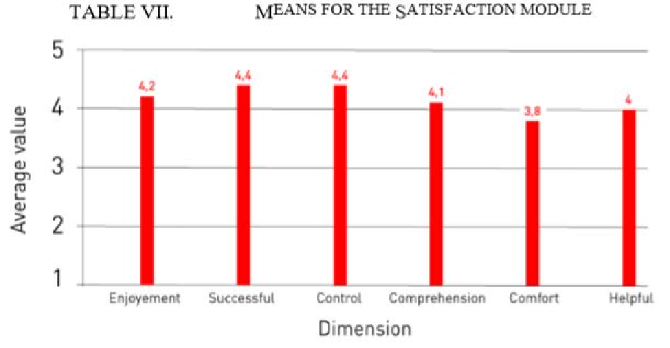
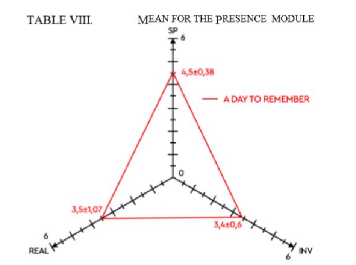
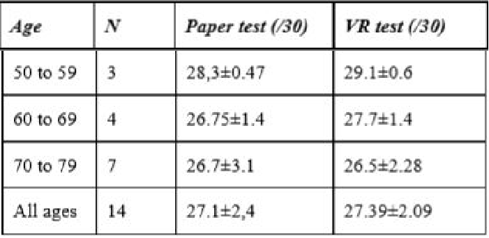

A virtual reality game for cognitive impairment screening in elderly: a user perspective
A virtual reality game for cognitive impairment screening in elderly a user perspective
Disclaimer
This post is based on the author's personal notes from the paper and does not represent any ownership of intellectual property rights. Use the information provided here at your own risk and discretion.
Reference
E. Dulau, C. R. Botha-Ravyse, M. Luimula, P. Markopoulos, E. Markopoulos and K. Tarkkanen, "A virtual reality game for cognitive impairment screening in the elderly: a user perspective," 2019 10th IEEE International Conference on Cognitive Infocommunications (CogInfoCom), 2019, pp. 403-410, doi: 10.1109/CogInfoCom47531.2019.9089973.
Introduction
- In 2018, the total global societal cost of dementia(痴呆症) was estimated to be US $1 trillion.
- In 2030, the estimated cost is twice as much as today (US $2 trillion) and the number of cases would exceed 152 million in 2050.
- Many tests (MMSE, MoCA, FCSRT, TMTA and TMTB, WCST) have very good qualities that make them indispensable tools for the diagnosis of dementia.
- But the traditional neuropsychological evaluation makes it difficult to predict the daily functioning of the individual, and lacks ecological validity (生态效度).
- The gap that now exists between older people and new technologies
(1) Technophobia (技术恐惧)
(2) The reduction of visual, auditory skills and motor performance
(3) The evil of simulators
(4) The complexity of using Human-Machine interfaces - The VR technologies developed today bypass the problems formerly encountered with interfaces that are not adapted to the elderly person.
Methods
- Participants
(1) 14 users who do not have Alzheimer's disease. - Game: A Day to Remember
(1) Room Stage: “wake up” and finish daily tasks (turn off alarm, take the lunch bag from fridge, take the wallet and the keys… ) before leaving the house.

(2) Path stage:
a. The user hears animal scream and must choose between 4 animal names.
b. A memory game.
c. The last task is raise their hand to stop the right bus.
(3) Question stage: In the TV Show studio the player answers 8 questions.


Measures
- Mini-mental State Examination (MMSE) for dementia
- System Usability Scale (SUS) for usability
- Simulator Sickness Questionnaire (SSQ) for sickness
- User Satisfaction Evaluation Questionnaire (USEQ) for satisfaction
- The Igroup Presence Questionnaire (IPQ) for presence
(1) Spatial Presence (SP) - the sense of being physically present in the VE.
(2) Involvement (INV) - measuring the attention devoted to the VE and the involvement experienced.
(3) Experienced Realism (REA) - measuring the subjective experience of realism in the VE. - User feedback
- Game scores
Results
-
SSQ
(1) In general, users responded that they did not feel any sickness after their experience, even if it was for all of them the first time they used a VR game. -
SUS
(1) The application rated a good level of usability with a score of 73±0.4.
 -
USEQ
(1) A Day to Remember works well to support screening dementia engaging the user.
 -
IPQ
(1) The mean of SP (4.5±0.38) and INV (3.4±0.6) allow greater enjoyment of the application. The mean of REAL is 3.5±1.07, it's enough to feel present in the game.
 -
User feedback
(1) Interview results showed that 75% of participants found the exercise simple and the application easy to use. -
Game scores VS MMSE scores
(1) The younger people are the more their VR results are better.
(2) The results of the virtual reality memory tests are a little better than the paper tests.
Conclusion
- A Day to Remember had good correlations between test scores and those of standard tests.
- A Day to Remember is an appropriate device to screening dementia by offering immediate feedback on performance.
Limitations
- The difference in ease of use technology by age.
- The level of complexity of the course (how to make the game neither too hard nor too easy?).
Copyright © 2015 Powered by MWeb, Theme used GitHub CSS.